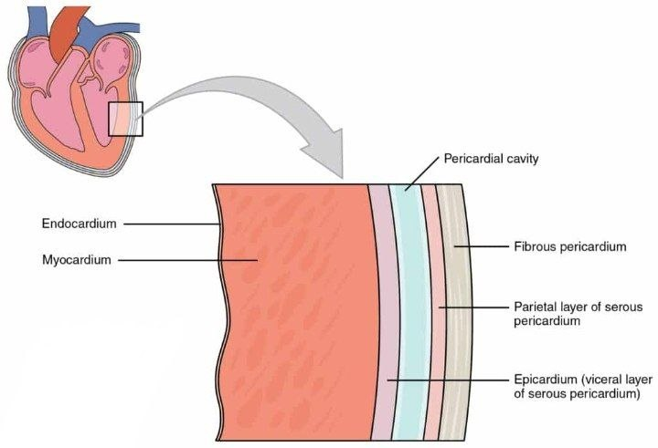
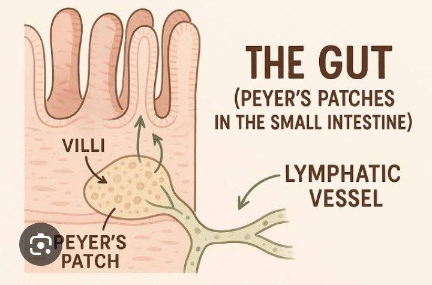

🦠 MICROBIOLOGY
🔬 Welcome to Microbiology
📌
Paste your CVS Microbiology notes here. Use the same block format as the MSK file: blue section headers, 🔻 bullets, ✔️ summary lines, tables, and callout boxes.
👑 Welcome to Microbiology class 👑
⚠️ INFECTIVE ENDOCARDITIS (IE) ⚠️
⭐ "Inflammation of the Endocardial Surface of the Heart due to microbial pathogen" ⭐
❤️ Definition
☢️ Infective Endocarditis (IE)
👉
is a microbial infection involving the endocardial surface of the heart including:
✅ Heart valves
✅ Mural endocardium
✅ Low-pressure side of a ventricular septal defect (VSD).
📋 Note
🔻
The mural endocardium is the inner lining of the heart's chambers (atria and ventricles) that is not part of the heart valves. While valvular endocarditis is more common, infections or damage to the mural endocardium—known as mural endocarditis—can lead to serious conditions like blood clots, strokes, and embolisms.
💡
The hallmark lesion is the VEGETATION 🌱
🌱 Vegetation Consists of:
🩸 Platelets
📘 Fibrin
🦠 Microcolonies of microorganisms
⚪ Scant inflammatory cells
📚 I. CLASSIFICATION
⏳ A. Based on Time Course & Severity
🔥 Acute IE
⚡ Rapidly destructive
☣️ High virulence organisms
👉 Commonly: Staphylococcus aureus.
❤️ Usually affects normal valves
💀 Fatal within days–6 weeks if untreated 💀
🐢 Subacute IE (SABE)
📝 Slowly progressive over weeks–months
☣️ Low virulence organisms
👉 Usually Viridans streptococci 🦠
❤️ Occurs on previously damaged valves.
🐌 Chronic IE
📅 Rare. Develops over >3 months
☣️ Often due to:
👉 Fungi
👉 Coxiella burnetii
🩸 B. Based on Valve Type
🔹 Native Valve IE (NVIE)
🔹 Prosthetic Valve IE (PVE)
👥 C. Based on Patient Category
💉 IV Drug Users (IVDU)
🏥 Healthcare-associated (Nosocomial) IE
⚙️ II. PATHOGENESIS & PATHOPHYSIOLOGY
🧩 Stepwise Development of IE
1 Predisposing Risk Factors
⚠️ Important Risk Factors:
🦴 Rheumatic heart disease (RHD)
❤️ Mitral regurgitation
❤️ Aortic stenosis
🪄 Ventricular septal defect (VSD)
🦾 Prosthetic valves
💉 IV catheters
🦷 Poor dental hygiene
🟡 Congenital heart disease
2 Endothelial Injury
💥 Valvular endothelial damage occurs from:
🌪️ Turbulent blood flow
🔪 Catheters
➕
Leads to deposition of:
🫧 Forms:
📈 NBTE = Non-Bacterial Thrombotic Endocarditis
3 Transient Bacteremia
🦠 Microorganisms enter bloodstream via:
🦷 Dental procedures
🩹 Skin breaks
💉 IV drug use
📌 Bacteria adhere to NBTE
4 Colonization & Vegetation Formation
🦠 Adherent Bacteria multiply rapidly
🛡️ Become Encased within fibrin & platelets, protecting them from host defenses like phagocytosis.
💾 Protected from: ❌ Phagocytosis
❌ Host immune defenses
5 Local & Metastatic Spread
💔 Valve destruction → Heart failure
🩸 Vegetation fragments break off → Septic emboli
🎯 Embolization Sites:
🧠 Brain
🫘 Kidneys
🫁 Lungs
🩸 Spleen
🦠 III. ETIOLOGICAL AGENTS
🧬 Main Organisms
Approximately 85–90% caused by:
🟡 Staphylococci
🟢 Streptococci
🔵 Enterococci
❤️ Native Valve IE
🟢 Staphylococcus aureus 👑 Most Common Overall
🏥 Especially in Healthcare-associated IE 🏥
🟢🦠 Viridans streptococci Community Acquired cause
🦾 Prosthetic Valve Endocarditis (PVE)
🚨 Early PVE (<12 months)
🏥 Nosocomial Infection
🔵 Common organisms:
🟢 S. epidermidis
🟢 S. aureus
🐢 Late PVE (>12 months)
🌍 Typically Community- acquired
🟢 Common organisms:
🟢 Oral streptococci
🟢 Coagulase-negative staphylococci (CoNS)
🦠 Why is S. epidermidis Important?
🛡️ Produces BIOFILM / SLIME LAYER (PIA)
🔧 Helps adherence to prosthetic devices 🦾
💉 IV Drug Users (IVDU)
🎯 Usually affects:
❤️ TRICUSPID VALVE (Right side)
🟢 Dominant organism:
👉 S. aureus
🟢 Left sided infection can involve varied etiology including
🟢 Pseudomonas aeruginosa
🍄 Candida sps.
❓ Culture Negative IE (5–10%)
Caused by:
💊 Prior antibiotic use
🐢 Fastidious organisms
🦅 HACEK Group
(Haemophilus, Aggregatibacter, Cardiobacterium, Eikenella, Kingella)
Other Important Causes:
🟢 Coxiella burnetii → Q fever
🦠 Other Important Organisms
🔻 🟢 S. gallolyticus (⚠️ Associated with colorectal cancer)
🔻 🍄 Fungi (Candida, Aspergillus)
🩺 IV. CLINICAL MANIFESTATIONS
🫀 Cardiac Manifestations
❤️ New/worsening regurgitant murmur
⚠️ Valve destruction
🫁 Congestive heart failure
🌍 Peripheral & Extracardiac Signs
🖐️ Janeway Lesions
🩸 Small painless hemorrhagic macules
🦶 Palms & soles
🟡 Osler Nodes
🔴 Painful raised nodules
🖐️ Fingertips/toes
👁️ Roth Spots
🩸 Retinal hemorrhages with pale centers
💅 Splinter Hemorrhages
🩸 Linear hemorrhages under nails
Other Findings
🔴 Petechiae
🫘 Splenomegaly
🖐️ Clubbing
🧠 Neurological deficits
🧪 Laboratory Findings
🔻 Anemia
⚪ Leukocytosis
🩸 Microscopic hematuria
⬆️ ESR
⬆️ CRP
➕ Rheumatoid factor
📖 V. MODIFIED DUKE CRITERIA
✅ Definite IE Diagnosis
✔️ 2 Major Criteria
OR
✔️ 1 Major + 3 Minor
OR
✔️ 5 Minor Criteria
🌟 Major Criteria
1 Positive Blood Culture
🟢 Typical IE organisms isolated from:
✅ Separate blood cultures
✅ Persistent positive cultures
2 Evidence of Endocardial Involvement
🌹 Positive echocardiography showing:
🟢 Vegetation
🟢 Abscess
🟢 Prosthetic valve dehiscence
🌟 Minor Criteria
⚠️ Predisposing heart disease/IVDU
🌡️ Fever ≥ 38°C
🩸 Vascular phenomena
🛡️ Immunologic phenomena
🟢 Microbiologic evidence not meeting major criteria
🔬 VI. DIAGNOSTIC WORKUP
🩸 Blood Culture
⭐ MOST IMPORTANT TEST
✅ Obtain 2–3 sets before antibiotics
📍 Different venipuncture sites
Timing:
⚡ Acute IE → within 1 hour
🐢 Subacute IE → over 24–72 hrs
🩻 Imaging
Echocardiography
🦇 TTE (Transthoracic Echo)
🦇 TEE (Transesophageal Echo)
Detects:
🌿 Vegetations
🔴 Abscesses
❤️ Valve damage
🧬 Non-Culture Tests
🧪 Serology:
🧬 PCR:
✔️ Detects microbial DNA from vegetations
💊 VII. TREATMENT PRINCIPLES
🎯 Core Principles
✅ Bactericidal therapy
✅ IV 💉 administration
✅ Maximal doses 👑
✅ Long duration (4–6 weeks)
💉 Treatment Regimens
🦠 S. aureus
🛡️ Native Valve
💊 Cloxacillin/Nafcillin (MSSA)
💊 Vancomycin (MRSA)
⏳ Duration: 6 weeks
🦾 Prosthetic Valve
➕ Rifampin (6 weeks)
➕ Gentamicin (2 weeks)
🟢 Viridans Streptococci
💊 Penicillin or Ceftriaxone
⏳ 4 weeks (native valve)
➕ Gentamicin in prosthetic valve cases
🦅 HACEK Organisms
💊 Ceftriaxone
OR
💊 Ciprofloxacin
⏳ 4 weeks (native)
⏳ 6 weeks (prosthetic)
🔵 Enterococci
💊 High-dose Penicillin/Ampicillin
➕ Gentamicin
⏳ 6 weeks
🧪 Therapeutic Drug Monitoring
💊 Vancomycin
Target trough:
💊 Gentamicin
Peak should remain:
⚠️ Prevents nephrotoxicity & ototoxicity
⚠️ VIII. COMPLICATIONS
🫀 Cardiac Complications
❤️ Congestive heart failure (MOST COMMON)
🫀 Myocardial abscess
Cardiac fistulas
🌍 Extracardiac Complications
🧠 Embolic stroke
🧠 Encephalopathy
🫘 Renal failure
🫘 Immune complex glomerulonephritis
🩸 Mycotic aneurysm
🧠 HIGH-YIELD PEARLS ✨
🌟 S. aureus → Most common overall cause
🌟 IVDU → Usually affects TRICUSPID valve
🌟 S. epidermidis → Prosthetic valve + biofilm formation
🌟 Blood culture before antibiotics 🩸
🌟 Vegetation = hallmark lesion 🌱
🌟 CHF = most common complication 💔
🌟 Duke Criteria = cornerstone of diagnosis 📖
🏆 QUICK MEMORY TRICK
🧠 "FROM JANE TO OSLER"
🖐️ Janeway = Painless
🖐️ Osler = Painful
✨ "Jane has NO pain. Osler is OUCH!" 😉
🟢 ENDOCARDITIS = "DAMAGED VALVE + BACTEREMIA + VEGETATION" 🟢
❤️🔥 MYOCARDITIS 🔥❤️
🔥 Inflammation of the Myocardium 🫀
📖 Definition
🟢
Myocarditis is an inflammatory disease involving the MYOCARDIUM ❤️ (the thick, contractile muscular layer of the heart).
⚠️
It is one of the three major cardiovascular infections affecting the layers of the heart.
💡 Clinical presentation ranges from:
😐 Mild/subclinical disease
to
💀 Fulminant fatal heart failure
✔️ Presents with a wide range of clinical manifestations.
🟢 I. ETIOLOGY
🌟 Causes of Myocarditis
🏳️ The causes are highly diverse, ranging from infectious organisms to Autoimmune disorders 🛡️, & Toxins ☠️.
👨⚕️🛡️ Autoimmune diseases
💊🚫 Drugs & toxins
🟢 Viral infections
🟢 Bacterial infections
🟢 Parasites
🟢 Fungi
🟢 A. VIRAL CAUSES (MOST COMMON) 👑
🔺
Viruses 🟢 are the most common cause of Myocarditis.
🟢
Coxsackie B virus is the most frequently implicated agent
🌟 Most Common Agent
🟢 Coxsackie B Virus
🐍 Other Viral Causes
🟢 Coxsackie A
🟢 Enteroviruses
🟢 Echovirus
🟢 Influenza A & B
🟢 HIV
🟢 Adenovirus
🟢 Parvovirus B19
🟢 Mumps
🟢 Rubella
🟢 Measles
🟢 RSV (Respiratory Syncytial Virus)
🟢 Varicella-zoster Virus (VZV)
🧬 Herpesviruses
🔴 B. BACTERIAL CAUSES
Important Bacteria
🟢 Corynebacterium 🟨 diphtheriae 🟨
💀 Diphtheria toxin ☠️ can directly damage 💥 myocardium
🟢 Borrelia burgdorferi
(the cause of 🦠 Lyme disease)
🟢 Group A Streptococcus
(💥 Associated with Rheumatic Fever)
Other Bacterial Causes
🟡 Staphylococcus aureus
🔵 Neisseria meningitidis
🟢 Clostridium perfringens
🟣 Mycoplasma pneumoniae
🟤 Chlamydia pneumoniae
🟤 Chlamydia psittaci
🥓 Rickettsial Species
🟢 Rickettsia rickettsii
🟢 Rickettsia tsutsugamushi
🪱 C. PARASITIC CAUSES
🌟 HIGH-YIELD ORGANISM
💾 Causes:
🇺🇸 CHAGAS DISEASE(American Trypanosomiasis)
⚠️
Major cause of chronic dilated cardiomyopathy.
🍄 D. FUNGAL CAUSES
📉
Rare but important in: 🧑🦲 Immunocompromised patients
Common Fungi
🧬 E. NON-INFECTIOUS / AUTOIMMUNE CAUSES
🌟 Acute Rheumatic Fever(ARF)
⚠️ Causes:
💔
PANCARDITIS
(Inflammation 🔥 of ALL heart layers)
🧠 Mechanism: Molecular Mimicry
📍
YYY-Antibodies against streptococcal M protein 🟢 cross-react with: ❤️ Cardiac myosin 🧲 Autoimmune myocardial injury.
Other Autoimmune Causes
🦋 SLE (Systemic Lupus Erythematosus)
🦴 Rheumatoid Arthritis
🤧 Allergic reactions
☠️ TOXINS & DRUGS
⚠️ Important toxic causes:
💊 Anthracyclines
❄️ Cocaine
🔪 Various cardiotoxic drugs
⚙️ II. PATHOGENESIS & SPREAD
🛤️ Routes of Spread
🟢
Microorganisms can reach the myocardium through several routes:
🩸
Hematogenous Spread (MOST COMMON)
🟢 Via:
Viremia
Bacteremia
🫁
Contiguous Spread
Spread from nearby infected organs: ➡️ Especially lungs
🛣️
Lymphangitic Spread
Through lymphatic channels
💉
Direct Inoculation
Occurs through:
🔪 Surgery
💥 Trauma
🟢 Viral Mechanism (Coxsackie B)
🧩 Stepwise Pathogenesis
1 Enteroviruses like Coxsackie B initiate replication in the mucosa and lymphoid tissue (pharynx/tonsils)
Viral replication in:
👄 Pharynx
🫁 Tonsils
🫘 Lymphoid tissue
2 Spread to: 💾 Peyer's patches
⬇️
3 And enter the bloodstream Primary viremia 🩸
⬇️
💀 Cytolytic Effect
🟢
Most enteroviruses are:
🔴 CYTOLYTIC ☠️ meaning they directly damage target heart cells/Directly destroy myocardial cells
🪱 Pathogenesis 💀 of T. cruzi
🪱 Parasites multiply locally as AMASTIGOTES intracellularly (in myocytes)
⬇️
🔬 Formation of pseudocysts
⬇️
⬇️
⬇️
🩺 III. CLINICAL PRESENTATION
⚠️
Presentation ranges from:
😐 Mild illness ➡️ 💀 Fulminant myocarditis
😐 Mild Presentation
Often resembles viral infection:
🤒 Fever
🤕 Headache
😷 Sore throat
🌸 Rash
🚨 Severe Presentation
❤️ Cardiac Symptoms
💥 Chest pain
😮💨 Dyspnea/SOB
💓 Palpitations
⚡ Arrhythmias
👶 Newborn Myocarditis
⚠️
MOST LIFE-THREATENING in newborns.
Presentation:
❤️ Sudden unexplained heart failure
🦴 High mortality rate
🫀 Myopericarditis
🔪
Myocarditis often coexists with:
💔 Pericarditis
💾
Concurrent inflammation is called:
💔 MYOPERICARDITIS
⚠️ IV. COMPLICATIONS
1. ❤️ Congestive Heart Failure (CHF)
Leads to:
💧 Edema
😮💨 Breathlessness
🫀 Hepatic congestion
2. 💔 Cardiogenic Shock
💀
Severe reduction in cardiac output ➡️ Life-threatening emergency
3. ⚡ Sudden Cardiac Death
⚠️
Myocarditis 🔥 is Responsible for up to 20% of sudden deaths in young adults 😮
Often due to:
⚡ Ventricular arrhythmias/block
4. 🫀 Chronic Dilated Cardiomyopathy
⚠️
Can occur YEARS–DECADES later
Especially with: ❌ Untreated Chagas disease
🔬 V. DIAGNOSTIC WORKUP
🧪 Laboratory Findings
🔥 Inflammatory Markers
⬆️ WBC count
⬆️ ESR
⬆️ CRP
❤️ Cardiac Biomarkers
Markers of Myocardial Injury
⬆️ Troponin T/I
⬆️ Creatine Kinase (CK)
⬆️ Myoglobin
🧫 Microbiological Tests
🩸 Blood Cultures
Used to:
✅ To rule out ❌ /Exclude bacterial causes
🧬 Viral Studies
🧬 Viral serology
🧬 RT-PCR
⚠️
Serology is difficult because: 🟢 Many viral serotypes exist.
📈 ECG Findings Common ECG Abnormalities
⚡ ST elevation
⚡ Non-specific T-wave abnormality
🩻 Imaging Chest X-Ray
May show:
❤️
CARDIOMEGALY 🟥
(Enlarged heart)
Advanced Imaging
🧠 MRI
🩻 Radiology studies
Useful for:
✅ Detecting inflammation
✅ Evaluating ventricular function
🧬 ENDOMYOCARDIAL BIOPSY
🌟 DEFINITIVE DIAGNOSTIC TEST 🌟
🧪 Confirms myocarditis histologically
⚠️
Reserved for severe cases because:
❌ Invasive
❌ Risk of complications
🧠 HIGH-YIELD PEARLS ✨
🌟 Coxsackie B = MOST COMMON cause
🌟 Myocarditis may mimic viral flu illness 🤧
🌟 Troponin elevation = myocardial injury ❤️
🌟 Sudden cardiac death in young adults ⚡
🌟 Chagas disease ➡️ dilated cardiomyopathy 🪱
🌟 Endomyocardial biopsy = GOLD STANDARD 🧬
🌟 Myocarditis + Pericarditis = Myopericarditis 💔
🏆 QUICK MEMORY TRICK
🧠
"COXSACKIE CRASHES THE HEART" 💥❤️
🟢 Coxsackie B
➡️ Viral replication
➡️ Cytolytic myocardial injury
➡️ Arrhythmia + Heart failure
❤️🔥
MYOCARDITIS = "INFLAMED HEART MUSCLE WITH ARRHYTHMIA & HEART FAILURE RISK" 🔥❤️
❤️🔥 PERICARDITIS 🔥❤️
🌟
Inflammation of the Protective Sac Around the Heart 🌟
📖 Definition
❤️
Pericarditis is an inflammatory disease of the PERICARDIUM ❤️ —the fibrous protective sac surrounding the heart.
✨ Classic Triad:
💥 Chest pain
🩺 Pericardial friction rub 🦋
📈 ECG changes
🟢 I. ETIOLOGY
🌟 Causes of Pericarditis
✔️
Pericarditis is commonly: 🟢 INFECTIOUS. But may also result from:
🦋 Autoimmune disease
⚠️ Metabolic disorders
❓ Idiopathic causes
🟢 A. VIRAL CAUSES (MOST COMMON)
🌟 Major Viral Cause
🟢 Coxsackie B Virus
Less commonly:
🟢 Coxsackie A
🐍 Other Viral Causes
🟢 Echovirus
🟢 Parvovirus
🟢 EBV
🟢 HIV
🟢 Mumps
🟢 Influenza A & B
🟢 Rubella
🔴 B. BACTERIAL CAUSES
🌟 HIGH-YIELD ORGANISM
🟢 Mycobacterium tuberculosis
💾 Causes:
🫁 TUBERCULOUS PERICARDITIS
Other Important Bacteria
🟢 Streptococcus pneumoniae
🟡 Staphylococcus aureus
🔵 Neisseria gonorrhoeae
🔵 Neisseria meningitidis
🦠 Borrelia burgdorferi (Lyme disease)
🍄 C. FUNGAL / MYCOTIC CAUSES
🚨
Usually seen in: Immunocompromised patients
🏥 Post-cardiac surgery patients.
Important Fungi
🦋 D. AUTOIMMUNE / INFLAMMATORY CAUSES
🌟 Acute Rheumatic Fever
⚠️ Causes:
💔
PANCARDITIS
(Inflammation of ALL heart layers)
Other Autoimmune Disorders
🦋 SLE
🦴 Rheumatoid Arthritis (RA)
🪨 Scleroderma
🐍 Reiter Syndrome
🦓 Dermatomyositis
⚙️ E. METABOLIC CAUSES
🩸 Uremia (renal failure)
🦋 Hypothyroidism
❓ F. IDIOPATHIC
Cause remains unknown
⚙️ II. PATHOGENESIS & SPREAD
🔥 Pathophysiology
🔺 Inflammation causes production of:
🧊 FIBRINOUS EXUDATE.
Resulting Changes
🫀 Pericardium becomes:
⬜ Dull
⬜ Opaque
🏜️ Sandy appearing
➡️ Eventually causes:
🧲 Adhesion formation
🪨 Fibrosis
🛤️ Routes of Spread
🫁
From nearby organs: ➡️ Especially lungs 🫁 (common in TB)
Through bloodstream:
🟢 Viremia
🟢 Bacteremia
⚠️ Common in miliary TB
Via lymphatic channels
Occurs after:
📚 III. CLASSIFICATION
🔴 A. TYPES OF PERICARDITIS
1 Caseous Pericarditis
🫁 Specifically associated with Tuberculosis
🟢 Tuberculous pericarditis
2 Serous Pericarditis
YYY Associated with autoimmune diseases like
3 Fibrous Pericarditis
🕰️
A chronic form occurring after prolonged inflammation from 🟢 TB or 🍄 Fungal infections.
4 Rheumatic Pericarditis
🔥
Part of a pancarditis, often presenting as fibrinous pericarditis.
Occurs in:
❤️ Acute Rheumatic Fever

💬 #Endocardium inflammation ➡️ Endocarditis
💬 #Myocardium inflammation ➡️ Myocarditis
💬 #Pericardium inflammation ➡️ Pericarditis
🟢 Viral Mechanism (Coxsackie B)

▲
#Peyer's Patches are clusters of lymphatic tissue in SI.
💧 B. TYPES OF PERICARDIAL EFFUSION
1 Serous Effusion
💧 Transudative fluid
Common in:
❤️ Heart failure
2 Suppurative Effusion
🟢 Pyogenic infection
Contains:
⚪ Leukocytes
🧱 Cellular debris
3 Hemorrhagic Effusion
🩸 Blood-containing fluid
Associated with:
🟢 Infection
🎗️ Malignancy
4 Serosanguinous Effusion
💧🩸 Mixed serous + bloody fluid
🩺 IV. CLINICAL PRESENTATION
Symptoms may range from:
😐 Mild viral-like illness
to
🚨 Severe cardiac compromise
💥 CHEST PAIN (CLASSIC)
⭐ Sharp & Positional ⭐
⚠️ Worse when: 🛏️ Lying flat
✅ Relieved by: ➡️ Sitting forward
🩺 PERICARDIAL FRICTION RUB
⭐ MOST CHARACTERISTIC SIGN ⭐
➕
Extra heart sound consisting of:
🔴 1 systolic component
🔴 2 diastolic components
👂
described as grating, scratching, or rasping.
Sound Description:
🔊 Grating
🔊 Scratching
🔊 Rasping
🌡️ Other Symptoms
🌡️ Intermittent fever
😮💨 Dyspnea
💨 Tachypnea
😷 Cough
😮 Dysphagia
🫁 TB-Specific Features
⚖️ Weight loss
🌙 Night sweats
🫀 Hepatomegaly
🩺 V. DIAGNOSTIC WORKUP
📈 ECG FINDINGS
⭐ Classic ECG Changes
📈 ST Segment Elevation
Other ECG Findings
📉 PR Depression
📉 T-wave inversion (later stage)
🧪 LABORATORY TESTS
🔥 Inflammatory Markers
⬆️ Leukocytosis
⬆️ ESR
⬆️ CRP
🧪 Routine Tests
🩸 Blood cultures
🩸 Urea
🩸 Creatinine
🫁 TB TESTS
💉 PPD Skin Test
Usually positive in TB
⚠️ Limitation:
BCG vaccine may cause false positives
🧬 Interferon Test
⭐ More specific for TB
🧬 Viral Studies
PCR
Viral serology
⚠️ Serology difficult because: 🟢 Many viral serotypes exist
🩻 IMAGING
🩻 Chest X-Ray
May reveal:
❤️ Enlarged cardiac shadow
⚠️ May show an enlarged cardiac shadow (if effusion >250mL) or a calcified pericardium.
🪨 Calcified Pericardium
Suggestive of:
⚠️ Chronic constrictive disease
🫀 Echocardiography (TTE)
⭐ BEST TEST FOR EFFUSION
Detects:
💧 Pericardial fluid
❤️ Tamponade physiology
🩻 CT Scan
✔️ CT Scan: Can show pericardial thickening (>5mm)
🧠 MRI
Useful for:
🔥 Detecting inflammation
🫀 Structural evaluation
🧪 DEFINITIVE DIAGNOSIS
⭐ Pericardial Biopsy & Culture ⭐
🫁 Especially important in: Tuberculous pericarditis
💊 VI. MANAGEMENT
🌟 Viral / Idiopathic Cases
Supportive Treatment
🛏️ Bed rest
💊 NSAIDs
💊 Colchicine
🟢 Specific Therapy
Bacterial Causes
💊 Antibiotics
⚠️ Must cover:
🟡 S. aureus
Viral Causes
💊 Antivirals
Example:
💊 Acyclovir for herpesvirus
Tuberculous Pericarditis
💊 Anti-TB therapy
💊 Corticosteroids
🎯 Goal: Prevent fibrosis & scarring
📍 Pericardiocentesis
🚨 EMERGENCY PROCEDURE
Performed to relieve:
⚠️ CARDIAC TAMPONADE
🔪 Pericardiectomy
May be needed for:
🪨 Constrictive pericarditis
⚠️ VII. COMPLICATIONS
1. 💧 Pericardial Effusion
Fluid accumulation around heart
2. ❤️ Cardiac Tamponade
⚠️
LIFE-THREATENING
💾 Compression of heart by fluid Results in:
❤️ Reduced ventricular filling
🩸 Shock
3. 🪨 Constrictive Pericarditis
🌟
DREADED LONG-TERM COMPLICATION 🌟
Commonly due to: 🫁 TB
Pathophysiology
Pericardium becomes:
🪨 Thick
🪨 Fibrotic
🪨 Non-yielding
🛑 Restricts ventricular filling
❤️ Other Complications
❤️ Heart failure
🫁 Pleural effusion
❤️ Restrictive pericarditis
🧠 HIGH-YIELD PEARLS ✨
🌟 Coxsackie B = common viral cause
🌟 TB = major bacterial cause worldwide 🫁
🌟 Chest pain relieved by leaning forward 🛋️
🌟 Pericardial friction rub = hallmark sign 🩺
🌟 ST elevation + PR depression on ECG 📈
🌟 TTE = best test for effusion 💧
🌟 Tamponade = emergency 🚨
🌟 Constrictive pericarditis = severe chronic complication 🪨
🏆 QUICK MEMORY TRICK
🧠
"PERI-CARDITIS PAIN PREFERS FORWARD" 🛋️❤️
💥 Pain worse lying down
✅ Better sitting forward
❤️🔥
PERICARDITIS = "INFLAMED PERICARDIAL SAC CAUSING POSITIONAL CHEST PAIN & FRICTION RUB" 🔥❤️
🦠 CARDIOVASCULAR INFECTIONS & PARASITIC HEART DISEASES 🦠
🌟 High-Yield Master Note for CVS Infectious Diseases 🌟
🔴 I. INFECTIONS OF THE VEINS
⚠️ SEPTIC / SUPPURATIVE THROMBOPHLEBITIS (STP)
📖 Definition
🩸
Septic (Suppurative) Thrombophlebitis is:
🦠 Infection + Venous Thrombosis
💾 Presence of an:
🩸 ENDOVASCULAR THROMBUS
in association with: 🟢 Bacterial or fungal infection
⚙️ Etiology & Predisposing Factors.
Common causes include:
💉 Intravenous catheters
🔪 Skin breakdown
🟢 Spread from adjacent infected structures
🦠 SPECIFIC STP SYNDROMES
1 LEMIERRE'S SYNDROME
🩸 Affected Vein:
🩸 Internal jugular vein
⚠️ Predisposing Event
😷 Exudative pharyngitis
🟢 Causative Organism
🟢 Fusobacterium necrophorum
💊 Treatment
🔪 IV Penicillin G
2 PYLEPHLEBITIS
🩸 Affected Vein:
🩸 Portal vein
⚠️ Predisposing Conditions
🫀 Diverticulitis
🟢 Intra-abdominal infections
🟢 Common Organisms
🟢 Bacteroides fragilis
🟢 Intestinal flora
💊 Treatment
🔪 Broad-spectrum IV antibiotics
➕ Heparin
3 SEPTIC PELVIC THROMBOPHLEBITIS
🩸 Affected Veins:
🩸 Ovarian vein & pelvic veins
⚠️ Common Scenario
🤰 Post-partum state
🟢 Organisms
🟢 Intestinal flora
💊 Treatment
🔪 Broad-spectrum IV therapy
➕ Heparin
4 LINE-RELATED SEPTIC PHLEBITIS
⚠️ Major Cause
🔪 Indwelling IV catheters
🟢 Common Organisms
🟡 Staphylococci
💊 Treatment
🔪 IV anti-staphylococcal antibiotics
🔪 Excision of purulent small veins
🌟 GENERAL MANAGEMENT OF STP
Main Principles
🔪 High-dose antibiotics
➕ Possible heparin therapy
🫁 II. TUBERCULOSIS (TB) & THE HEART
❤️ MAIN CARDIAC MANIFESTATION
🫁 TUBERCULOUS PERICARDITIS
✔️ Most common cardiac involvement in active TB
⚙️ PATHOPHYSIOLOGY
Inflammation produces:
🧊 FIBRINOUS EXUDATE
🫀 Pericardial Changes
Pericardium becomes:
⬜ Dull
⬜ Opaque
🏜️ "Sandy sac"
➡️ Leads to:
🧲 Adhesion formation
🪨 Fibrosis
📚 CLASSIFICATION
1 Caseous Pericarditis
🌟 Classic TB-associated type
2 Fibrous Pericarditis
Occurs after prolonged inflammation
🛤️ ROUTES OF SPREAD
🫁 Contiguous Spread
From lungs or nearby organs
🩸 Hematogenous Spread
Especially in:
⚠️ Miliary TB
🩺 CLINICAL PRESENTATION
🌡️ Fever
🩺 Pericardial friction rub
⚖️ Weight loss
🌙 Night sweats
🫀 Hepatomegaly
⚠️ COMPLICATIONS
🪨 Constrictive Pericarditis
🌟 DREADED COMPLICATION 🌟
Pericardium becomes:
🪨 Thick
🪨 Fibrotic
🪨 Non-yielding
🛑 Restricts ventricular filling ❤️
Other Complications
💧 Pericardial effusion
❤️ Cardiac tamponade
❤️ Heart failure
🔬 DIAGNOSTIC WORKUP
🧪 PPD SKIN TEST
Usually positive 🫁
⚠️
False positives occur with: 🩹 BCG vaccination
🧬 INTERFERON TEST
⭐ More specific for TB
📈 ECG Findings
Classic Change:
📈 ST Segment Elevation
Additional ECG Changes
📉 PR depression
📉 T-wave inversion
🧪 Definitive Diagnosis
⭐
Pericardial Biopsy & Culture
🌟 More definitive than fluid smear
🦠 III. SPIROCHETES & THE HEART
A. SYPHILIS
🟢 Organism:
🪱 Treponema pallidum
⏳ Timing of Cardiac Disease
Occurs during:
⚠️ TERTIARY SYPHILIS
Usually many years later
⚙️ Pathogenesis
Spirochetes invade:
❤️ Aortic root
💾
Cause:
🔥 Destructive granulomatous inflammation
❤️ Cardiac Effects
❤️ Aortic root dilation
❤️ Aortic valve insufficiency
🧪 Important Point
🧪
Perform syphilis serology in: 😐 Older adults with acquired aortic root dilation